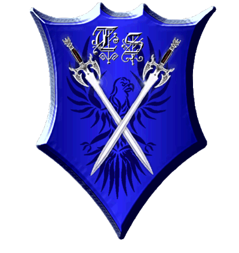

| Übersicht,
Alltägliches und Lokales (RPG) |
|
Auf wiedersehen Damona
|
Galaton Dragus
 |
*kopfschüttelnd in den Himmel schaut*
Baron Galaton Dragus,
Vorsteher von Bethana,
Ehemann der reizenden Tonja Dragus
Zur 16. Stunde am 42.Erntemond im Jahre 442 |
01.07.10 23:09
 |
|
Otin ni Shim
 |
Das Ende unseres Lebens auf der Scherbe ist der Anfang von etwas Neuem in Turas Reich.
Der Schmerz vergeht, was bleibt sind die Erinnerungen an eine wunderbare Frau und Dankbarkeit für die Arbeit im Tura-Konvent und die Errungenschaften in der Heilkunst.
Freifrau Otin ni Shim,
Vorsteherin von Osto Alda,
Netre ni î Cirolur
Zur 5. Stunde am 45.Erntemond im Jahre 442 |
02.07.10 13:30
|
|
Ninniach Lhuthien
 |
Leb wohl Damona,
Tura wird dich mit offenen Armen empfangen und all deine guten Werke vergelten, so wie es hier niemand auf der Scherbe kann.
Viele werden dich vermissen, aber in unseren Herzen wirst du weiterhin leben.
Nur die sterben wirklich, die vergessen werden.
Lady Ninniach Lhuthien,
Vorsteherin von Tuborg
Zur 8. Stunde am 51.Erntemond im Jahre 442 |
03.07.10 23:44
|
|
| Calenleya valvawyn (RIP) |
Spät nachts steht eine kleine Elfe vor einem frischen Grab. Sie spricht kein Wort, doch in ihrem Blick sieht man Trauer und Zorn.
Priesterin Calenleya valvawyn,
Priesterin im Dienste des einzig wahren Glaubens an Tura,
Oberste Grabwächterin Turas,
Grabwächterin der Sonnensteppe
Zur 23. Stunde am 31.Dunkelfrost im Jahre 442 |
20.07.10 11:19
|
|
Tessa Sesell
 |
nicht Damona...*fassungslos da steht*
Lady Tessa Sesell,
Vorsteherin von Jool Harbour
Zur 16. Stunde am 33.Dunkelfrost im Jahre 442 |
20.07.10 20:47
|
|
Luzi ni Mur
 |
Und wer gibt mir jetzt Kuchen wenn ich nach Loh komme? *entsetzt* Ich werde bestimmt verhungern!!!
Luzi ni Mur,
Valendors wandelnde Flohherberge
Zur 6. Stunde am 45.Dunkelfrost im Jahre 442 |
23.07.10 13:44
|
|
Übersicht,
Alltägliches und Lokales (RPG)
|